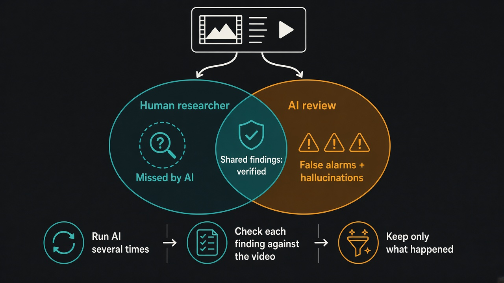

AI can triage usability test videos, but every finding it adds on its own needs checking
Source: MeasuringU, Jim Lewis and Jeff Sauro (@MeasuringU)
original post · full study
What it claims
MeasuringU had ChatGPT and Gemini analyze usability test videos and compared them with experienced human researchers, one video at a time. In the third case, a participant who failed a booking task, the researcher logged 11 usability problems. Across four runs each, ChatGPT caught 8 of them at least once (5 consistently) and Gemini caught 5. The two AIs also reported 6 problems the human didn't: all 6 turned out to be false alarms (something happened but wasn't really a problem) or hallucinations (it never happened). The AIs found no real problem the human missed. Agreement with the researcher was 47% for ChatGPT and 39% for Gemini, against roughly 50% that MeasuringU treats as typical between two human raters. The earlier two videos showed the same pattern.
Why it matters for a PO
It is tempting to drop session recordings into an AI and paste its list into the backlog. This study says the overlap with a human is respectable, but the AI-only extras are exactly where it goes wrong, and it still misses some real problems. A PO who turns unverified AI findings into stories will spend the team's capacity fixing things users never struggled with, while a real issue goes unseen. AI is a fast first pass that tells you where to look, not the evidence itself.
3 takeaways
- Treat AI usability findings as leads, not evidence. Overlap with a human was about 40–47%, close to human-to-human agreement but not a replacement.
- Be most suspicious of problems only the AI reported. In this study every one of them was a false alarm or a hallucination.
- Run the analysis more than once and keep a human watching the clip. The AIs found different problems on different runs and still missed three the researcher caught.
Practice this week
Take one recorded usability or customer session. Run an AI review of it twice with the same prompt, then watch the recording yourself and mark each AI finding as real, false alarm, or did not happen. Only real findings become backlog items, each with a timestamp to the clip. Note what you caught that the AI didn't.